A self-initiated collection built end to end, from written direction through
to a finished campaign. Nobody commissioned it. We made it to show how the
studio works when it has full control of the brief.
Type
Concept collection
Scope
Direction, graphic, garment, campaign
Pieces
Hood, tee, jersey, shorts, jorts, longsleeve
Status
Self-initiated, unreleased
01 Direction
Written before anything was made
The collection starts as a written codex, not a prompt. It fixes the
palette, the light, the settings and the wardrobe, so every frame made
afterwards has something to be judged against.
Pole one, street truth
Direct on-camera flash, hard shadow, deep black falloff. Chicken
shops, laundrettes, wet pavement at night. Off-guard and unbothered.
Pole two, elevated myth
Chiaroscuro, subject emerging from black, marble and classical
statuary. Monumental stillness, face half hidden.
Both poles have to be present or it reads as a clean render instead of a
real campaign. The swing between them is the whole idea.
Palette
Sampled from the finished garments and the streets they were shot in,
not picked from swatches.
Onyx
#161616 · the wash
Bone
#E7DCD1 · the type
Violet
#634D6E · the print
Slate
#21212C · colourway two
Concrete
#D1C6BB · the backdrop
Brick
#8C6B4F · the estates
02 Graphic
The statement artwork
A fool cast in marble
The type is filled with money and the statue stands in front of it, so
the monument and the currency occupy the same space. It reads as a
shrine and a joke at once, which is the tension the codex asked for.
Everything downstream, the print placement, the wash, the campaign
setting, is decided by this one piece of artwork.
03 Garment
Print on product
Washed black, studded, distressed
A heavyweight hood in washed black and washed navy, with studded cuffs
and shoulders and deliberate distressing through the body. The print is
set deliberately low, so the pocket cuts the last word and the lockup
has to be completed by the person reading it.
The collection extends to tees, shorts and a navy mesh jersey that
carries the lockup arched across the back over a cracked number zero.
Then the quieter pieces: black denim jorts stitched in bone with a
struck coin badge at the back waistband, and a thermal longsleeve that
runs engraved filigree down both sleeves, made in washed black and bone.
Detail shots are made at the same time as the campaign, not after. A
product nobody can see up close is a product nobody trusts.
04 Campaign
One world, night and day
Chicken shop · hood
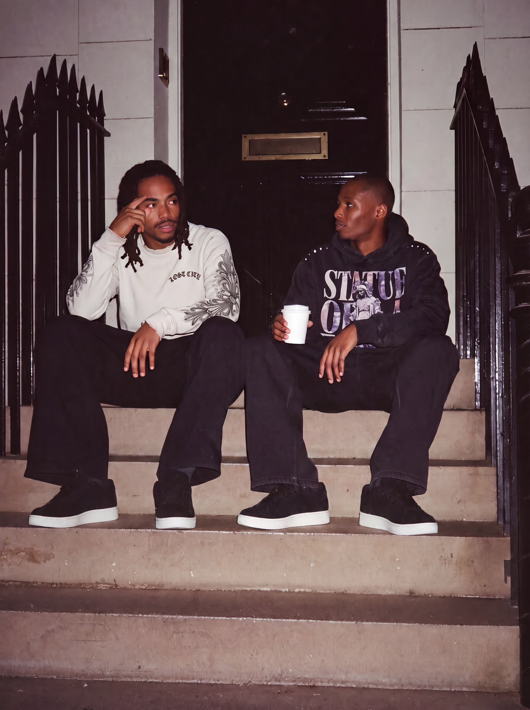
Georgian steps · longsleeve bone, hoodMarket shutters · longsleeve, tee, tee navy
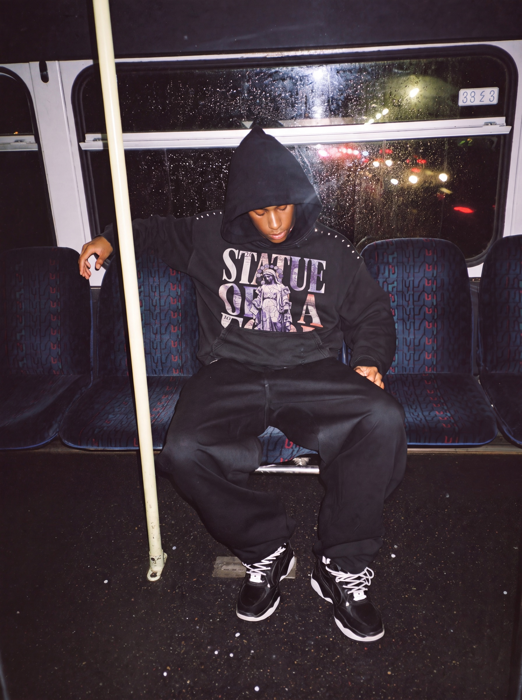
Night bus · hood
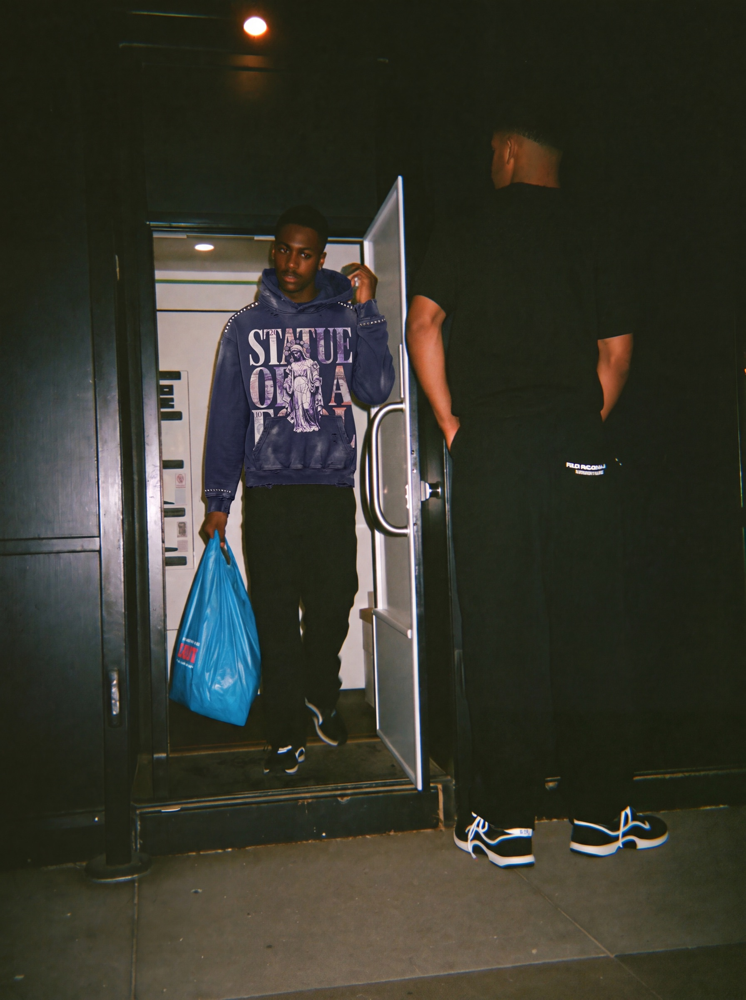
Off-licence · hood, navy
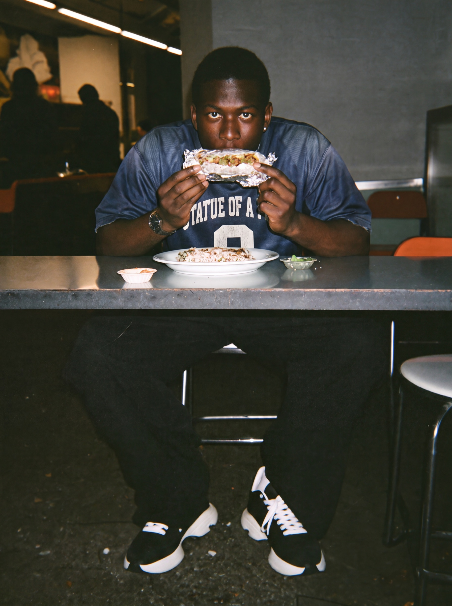
Kebab shop · jersey
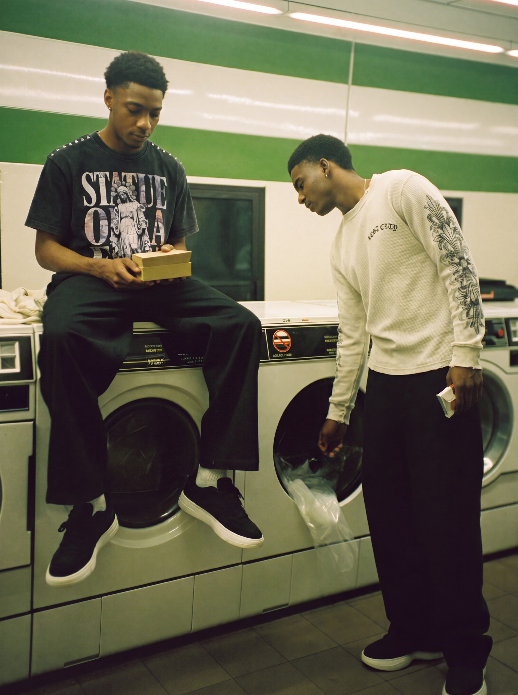
Laundrette · tee, longsleeve bone
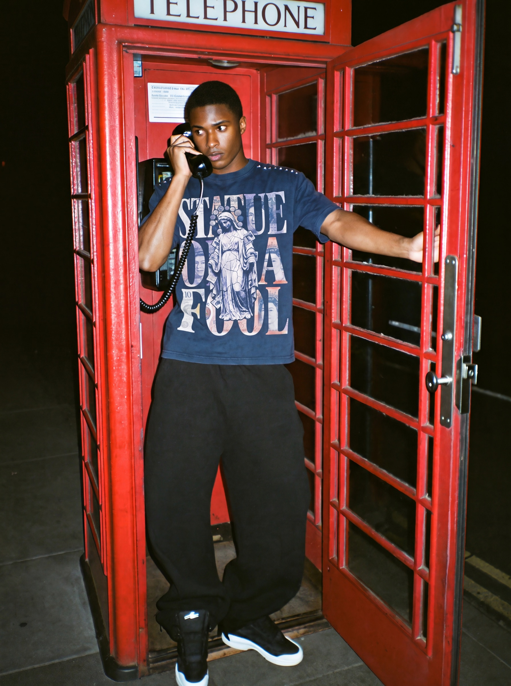
Phone box · tee, navy
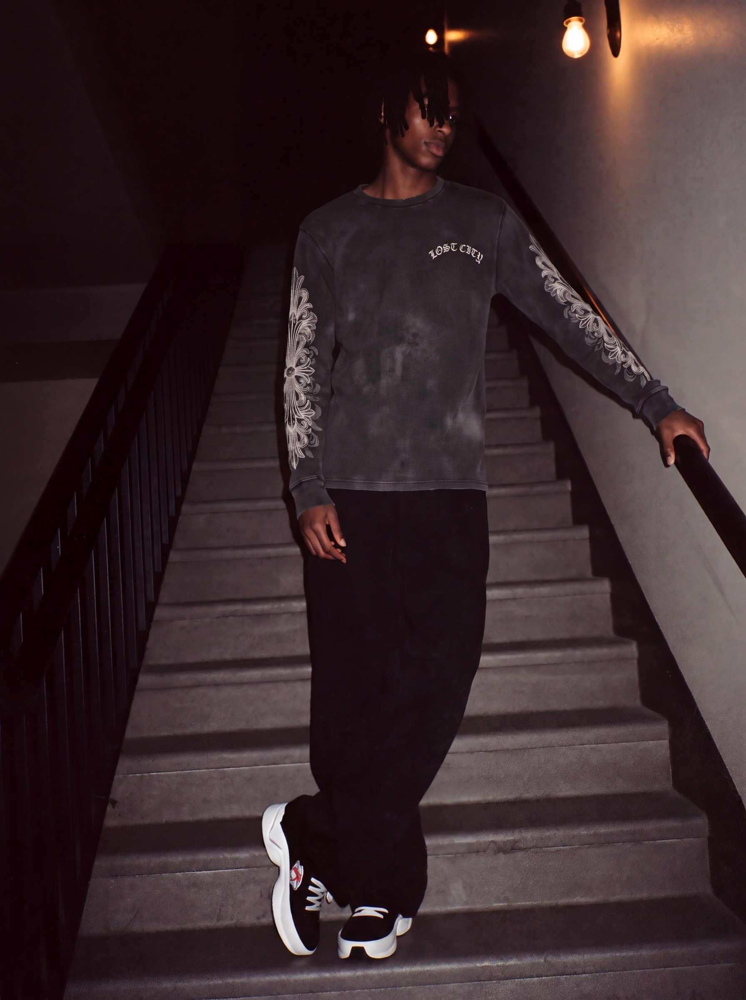
Stairwell · longsleeve
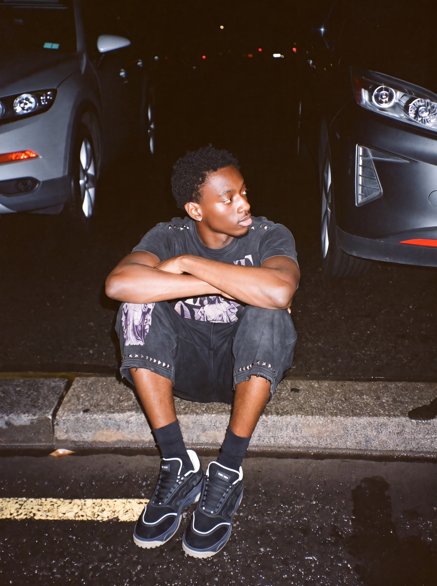
Kerb · tee, shortsLaundrette door · jersey, jortsTakeaway · tee, longsleeve bone
And in daylight
Same cast, same world
Estate, daylight · hood, tee navy
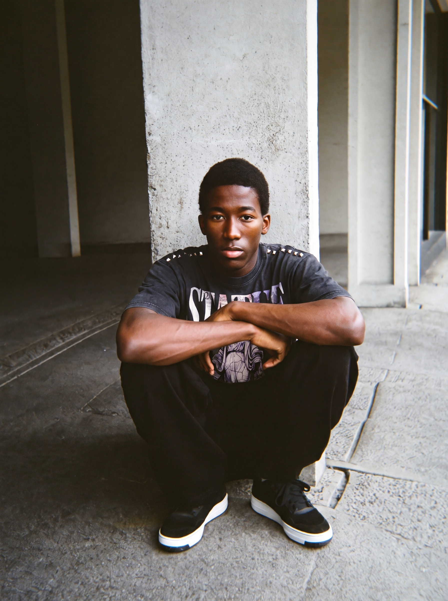
Barbican · tee
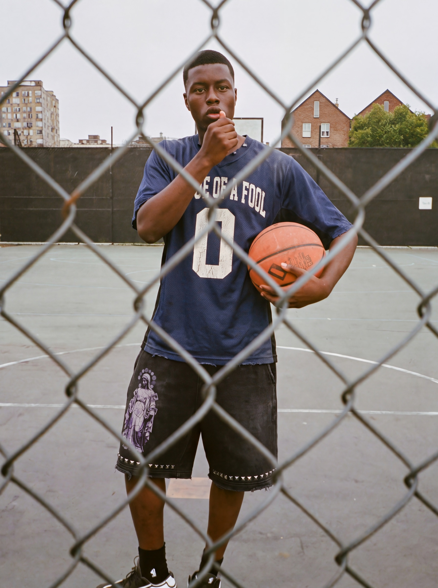
The cage · jersey, shortsWalkway · jersey, jorts
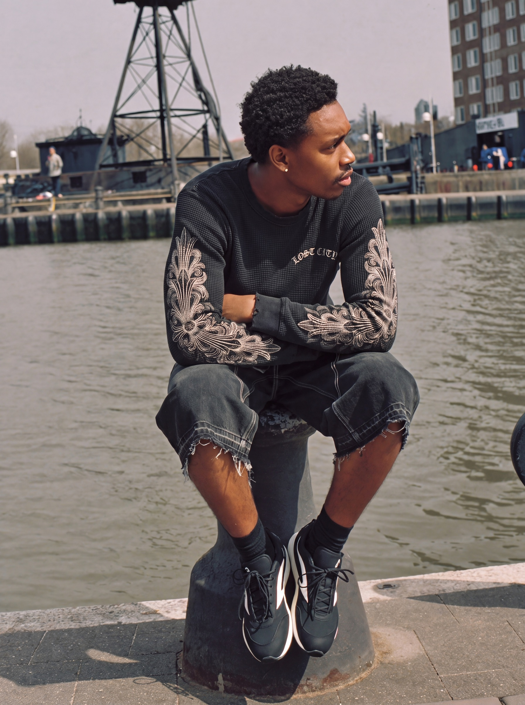
Canal · longsleeve, jorts
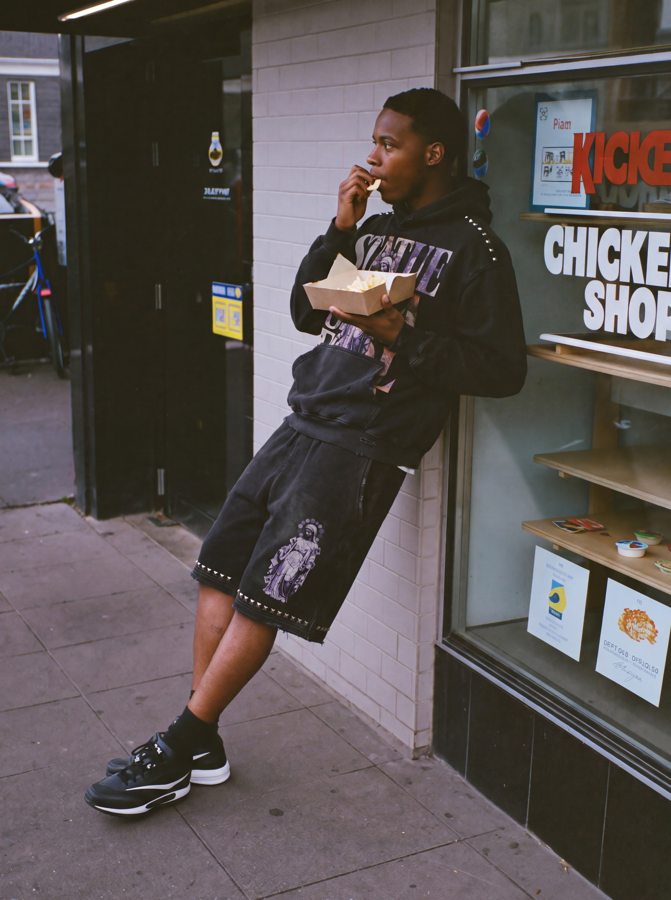
Chicken shop, daylight · hood, shorts
One world, a cast of faces, shot at night under flash and again in
daylight. Eighteen of the twenty-one final frames, six garments, and the
piece is exact to the flat product in every single one. Holding a look
steady across people, locations and two kinds of light is the hard part
of this work, and it is what separates a campaign from a folder of nice
images.
Want one of these?
This is what a full campaign looks like when the studio runs it end to end.
If you want the same for your brand, the first conversation is free.